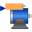
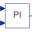
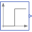
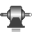
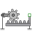
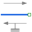

ActuatorWithNoiseDemonstrates how to model measurement noise in an actuator |
|
Diagram
Information
This information is part of the Modelica Standard Library maintained by the Modelica Association.
This example models an actuator with a noisy sensor (which is in the motor component):

The drive train consists of a synchronous motor with a current controller (= motor) and a gear box. The gearbox drives a rod through a linear translation model. Softly attached to the rod is another mass representing the actual actuator (= mass). The actuator is loaded with a constant force.
The whole drive is steered by a rate limited speed step command through a controller model. In the motor the shaft angle is measured and this measurement signal is modelled by adding additive noise to the motor angle.
In the following figure, the position of the actuator and the motor output torque are shown with and without noise. The noise is not very strong, such that it has no visible effect on the position of the actuator. The effect of the noise can be seen in the motor torque.

{kind=link}
Note, the noise in all components can be easily switched off by setting parameter enableNoise = false in the globalSeed component.
Components (11)
|  | motor |
Type: MotorWithCurrentControl |
|---|---|---|
|  | controller |
Type: Controller |
|  | speed |
Type: Step |
|  | gearbox |
Type: Gearbox |
|  | idealGearR2T |
Type: IdealGearR2T |
| mass |
Type: Mass |
|
|  | constantForce |
Type: ConstantForce |
| slewRateLimiter |
Type: SlewRateLimiter |
|
| rodMass |
Type: Mass |
|
| elastoGap |
Type: SpringDamper |
|
| globalSeed |
Type: GlobalSeed |